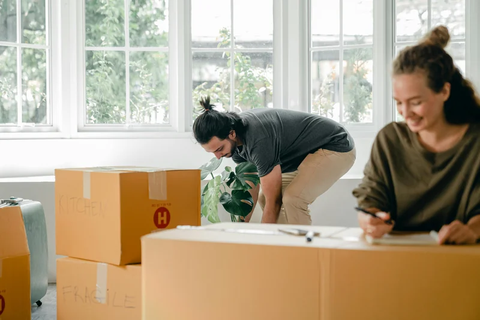

slug: solv-donatedequipment
Hello, are you there? My name is Mateo and I will accompany you in the development of this solution. If you are reading, listening to, or watching this, it is because you are interested or curious about how to obtain donated equipment. If so, you are in the right place.
What is obtaining donated equipment?
In short, this solution is about reuse. It is about being consistent with caring for the world we live in; it is about taking advantage of things that are obsolete to others, but that we can perhaps use for much longer.
This solution serves to give a second chance to equipment that is no longer needed. Did you know that there are companies that want to upgrade their equipment and donate what they have? This equipment is usually in good condition and your community could take advantage of it.
What is this solution for?
While this solution does not require money to purchase equipment, keep in mind that it can take weeks, or even months, depending on the steps we will tell you about below. For your part, you have a better chance of receiving a donation if you demonstrate that the use of the equipment will be communal and that its purpose is to improve people’s quality of life.
What do you need?
- Persistence.
- Patience.
- Support from others. Teamwork increases the chances of success.
How to do it?
Let’s get started!
This solution is developed in three steps in which we will tell you everything we know and have learned at the SOLE Colombia Foundation about how to get donated equipment. All cases are different, so it is important that you are willing to adapt these steps depending on the difficulties you encounter along the way.
Photo: veerasak Piyawatanakul - Pexels
Step 1 → Find the donor company and identify the relationship model
Generally, equipment donors are companies with great economic capacity, payroll, and infrastructure. Think of telephone or computer companies, universities, or find out about the sponsors of social projects in your region. However, we suggest you start with small companies. For this, you have two options:
- Option 1: Direct search
You can search for companies or people who donate equipment through the internet, social networks, or by consulting your contact networks or close circles.
💬 For option 1, make a list of the companies and the ways you have to contact them; it could be through the people who manage the organization’s finances or those who manage the computer equipment.
The key is to get a direct contact at the donor company with whom you can speak in person, send an email, make a call, or send a letter. If you send a letter or an email, make sure it will be read and, in case they are not the person responsible for making that decision, ensure they will redirect it to the person you need.
- Option 2: Dissemination
You can write a message or post on social networks making it explicit that: 1. you need donated equipment in good condition; 2. you have a community project in which many people will benefit; 3. write the number where they can contact you; 4. Be clear about who you are and try to make the message evoke empathy and trust. An example of a message could be:
“Hello everyone! My name is Amaranta and I am part of the XYZ FOUNDATION. Does anyone know of organizations that are donating computer equipment in good condition? We are looking for support to implement a project with older adults in rural areas of Colombia. Any information or contact would be of great help. Thank you!
My contact number is 123456789
We suggest you carry out both options at the same time, this will expand the possibilities you have to find a donor company.
💪🏽 Cheer up! At this moment, it is key that you are persistent. This does not have a magic formula; it is a matter of knocking on doors and opening paths. In any case, if you have read this far, it is because you already have the will to do it and that is to be admired.
Step 2 → Wait for your response and don’t let the contact “cool down.”

Photo by Fauxels: Pexels
Once you have sent the requests, all that remains is to wait and insist continuously to receive a response. Do not let the contact cool down; if more than a week passes without any response, write again or go in person if possible. When you get an affirmative response, be clear about the model in which you will receive the equipment: not all companies donate their equipment, some decide to give it away, so there are two types of models:
- Option 1: Gifting equipment
You may find a company or person who gives away their equipment. Family members can give away equipment. When you contact them, make sure of the modality in which you will actually receive the equipment in this arrangement.
- Option 2: Donating equipment
Now, in the case of companies that donate, it is a different model in which a second chance is given to equipment that is in good condition and can be used by people and communities that need it.
How does it work? Many companies have to make updates that require changing their equipment or need new technologies to carry out their work, so they decide to donate and thus can receive a tax deduction.
⚠️ Keep in mind that, for this to be possible, donor companies need to receive a donation certificate. If you are not part of a foundation, you must find an ally who can issue this certificate for you.
Who and how is this certificate issued for companies that want to donate? To find an ally, think of a non-profit entity that has an active legal status and can issue these certificates for the companies that will donate the equipment. For example, foundations, cooperatives, or similar entities in your region. Talk to them and tell them about your purpose. If they decide to support you, ask them for guidance in this process.
We invite you to look up the story of Alex Cortés, an engineer who founded Fundación Click → with the goal of giving a second life to computers that many people, organizations, or companies no longer need; he decides to repair them, perform maintenance, and give them away or donate them to those who need them most. If you want to know more about his story, we invite you to look up him, his foundation, and his history.
⚠️⚠️ Important: you must be clear about how the equipment will be used, since legally the equipment will belong to the ally you found. Don’t forget to check that the equipment they give you is functional. We don’t want you to end up storing technological trash that you will have to repair.
Step 3 → Receiving the equipment and building the relationship

Photo: Ketut Subiyanto - Pexels

Photo: Cytonn photography - Pexels
For the reception of the equipment, in either of the two modalities, keep in mind that each company or person has their own procedure.
The delivery of the equipment can be a shipment, you may have to pick it up, or reach an agreement on the place of delivery with the company or person who will make the donation. After delivery, it is important to know what kind of relationship you want and can build with them:
- Option 1: Gifting equipment
In this modality, paperwork is usually not required to formalize the delivery. However, it is likely that donors will seek to establish a short or medium-term relationship to know the destination and use of the equipment. If this is your case, we suggest you make it explicit and maintain cordial communication with them.
For example, although it is not mandatory, at the SOLE Colombia Foundation, we usually formalize the process through a thank-you letter signed by both parties, where the delivery, the condition of the equipment, and our commitment to make good use of them are corroborated.
- Option 2: Donating equipment
For the delivery, make a donation request explaining your interests, conditions, and the cooperation you will build.
How many computers do you need? What condition is the equipment you are going to receive in? What does the donor company need from you? What will you use the equipment for? Who will be the people and communities benefited? For this option, we suggest that, as in option 1, you consider the possibility of building a bond with the donor company.
At SOLE Colombia we usually send the donor companies photographs that thank them and show the communal use of the equipment, with which we try to open the possibilities for future donations.
What does the communal use of equipment imply?
Do you remember what we mentioned at the beginning of this solution about the possibilities you can have of receiving a donation if you demonstrate that the use of the equipment will be communal? Now we invite you to reflect on the importance that the collective use of equipment can have in a community. It is not just about receiving them, but about reaching agreements on who will manage them, how they will use them, and how often; this will involve fostering dialogue and teamwork. It is not about having a lot of equipment, but about knowing how to use it in a community.
See you soon! We invite you to investigate other solutions and keep tinkering.
Other possible internets
When you receive equipment that others do not use, you have proven that this solution works. You will also have created a relationship with someone; that is beautiful and powerful. Someone who has tuned into your purpose and wants to give you a hand.
As you create new relationships, you will feel increasingly confident in finding potential donors. Now that you have equipment, would you be encouraged to do another solution? Browse more Voltaje solutions →
What can you achieve with this solution?
When you cultivate the relationship with your donors, it is possible that they can make donations more than once. Can you imagine if they donated a few computers to you every year? What would you do then with all that equipment?
If you want to know what we do at SOLE Colombia with the computers that are donated to us, take a look at www.solecolombia.org
Thinking about how you can extend this benefit to others is a way to make this world a fairer place. Would you like to try it in your community? Was this solution useful to you? We hope so! And if it was, share it with other people who you know could use it.
See you soon! 👋🏽
Related solutions
- Having community computers brings new challenges: How to share available computers? →
- If electricity in your community is unstable or non-existent, you can consult this alternative: How to generate electricity using a bicycle? →
- When you have equipment and electricity, it is time to have a connection. There are several options. This is one of them: 4G antenna? →
Remember that at Voltaje ⚡⚡ you can find many more solutions to connect without fear of using the internet in a group. Go ahead and keep browsing! See more solutions →
References
- Press release from the newspaper El Tiempo (2016): These engineers give a new use to ‘trash’ computers → so you can read the press release that the newspaper El Tiempo made in 2016.
- Informative article: Donation of computers for the development of social projects →